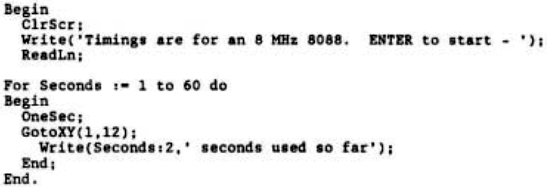

Scorpio News |
July–September 1987 – Volume 1. Issue 3. |
| Page 22 of 67 |
|---|

The timings obtained were:–
| Z80 | = | 135 | Secs at 4 MHz |
| 8080 | = | 100 | Secs at 4.77 MHz |
| 60 | Secs at 6 MHz | ||
| 8086 | = | 46 | Secs at 6 MHz |
| 80286 | = | 36 | Secs at 6 MHz |
| 26 | Secs at 8 MHz | ||
| 18 | Secs at 12 MHz |
These suggest that the effects of a boost in the clock rate are in proportion to the speed boost, an 8088 is 13% more ‘powerful’ than a Z80, an 8086 is 30% more ‘powerful’ than an 8088, and an 80286 is 77% more ‘powerful’ than an 8086 (running 8086 code).
Using these figures, the DOS-Plus (8 MHz 8086) and CP/M-86 (8088) results shown in Vol 1 Issue 2 page 31 give GM888 clock speeds as follows:–
| ProPortran | – | 30 Secs x 8 (1 MHz 8086) x 1.3 (1 MHz 8088) / 54 (8088 result) = a clock speed of 5.78 MHz |
| Basic86 | – | 73 * 8 * 1.3 / 130 = a clock speed of 5.84 MHz |
The average of the above is 5.81 MHz, very close to the claimed speed and suggesting that the figures above are pretty accurate.
An area I am not sure of the effect of is adding a wait state. Systems I have used which add a wait state when the faster clock speed is used seem to give pretty well the expected results from the clock speed boost alone, suggesting the addition of a wait state matters little. Is this correct?
Yours sincerely, A D Bowler, North Cheam, Surrey.
Dear Sir,
I have a terrible confession to make: I have purchased an IBM clone. After nearly 10 years being faithful to the Z80 chip I have committed the unthinkable and I am in the process of transferring my allegiance to the IBM standard from faithful CP/M-80. I have owned an Apricot for business use for three years and although it is an excellent machine it did not have the available open architecture that 80-BUS had supported, or the range of public domain software under CP/M-80. With the Apricot having “come out” I decided that it was time to see what was available on the hardware and software front to tempt me.
IBM have done s good job in fixing a standard to which most people adhere eventually. They have brought order to chaos in the past with standard disk formats, and with the PC we have a rudimentary framework to actually use a sophisticated program with graphics and windows that is unknown in the CP/M environment. It gives a new meaning to the phrase “user friendly” with added complexity for all programs and the perceived need to take a Ph.D. to drive the latest commercial offerings.
| Page 22 of 67 |
|---|